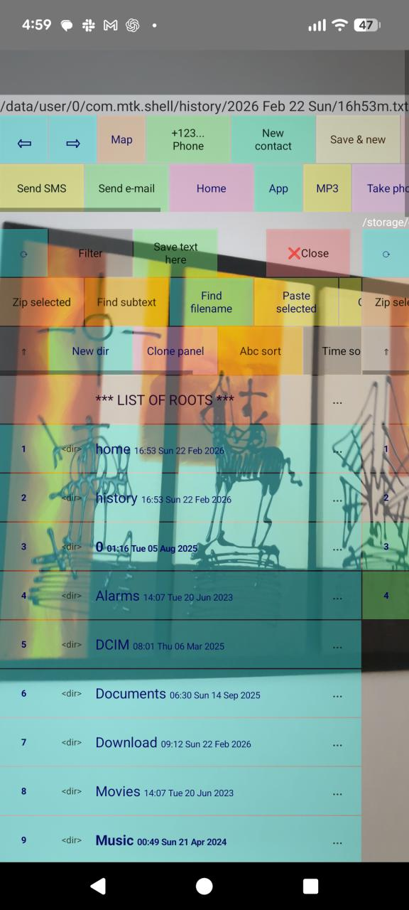

ClearShell
Open it when you need to quickly jot something down. ClearShell is an original, ad-free file manager, address book, FS-focused MP3 player, and notepad for jotting down short notes, creating new contacts, and sending emails. It's also a unique, high-precision calculator that remembers variables and allows you to perform calculations with comments. Camera and location buttons are always within reach. You can group application icons in the file system, launch them, and execute Linux commands.

Install ClearShell.apk